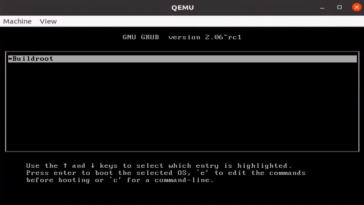
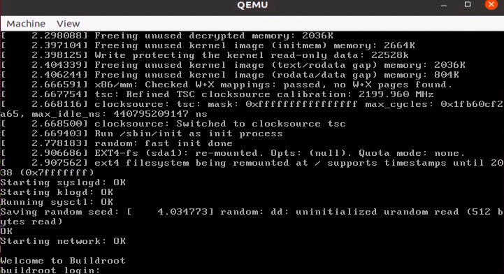

$ WORKSPACE=/opt/workspace/
$ cd $WORKSPACE
$ git clone https://github.com/rhboot/grub2在这个章节你将学会如何使用Busybox和grub制作一个使用UEFI启动的系统。这个章节基于qemu模拟器，通过这个章节可以得到一个可运行的镜像，这个镜像使用UEFI提供的功能完成内核的引导工作。我们还是使用OVMF（在之前介绍过，这个是使用比较广泛的EFI的开源解决方案）组件进行模拟UEFI的功能。
和BIOS一样同样需要编译GRUB，只不过这一次是使用EFI版本进行编译。
需要注意的是grub的安装可能会毁坏你的系统，如果对其不是很了解以下的例子建议在虚拟机中运行，不要在真实的物理机上运行。
编译GRUB
下载源码，这里使用了Red Hat提供的源码库
进行配置
$ ./bootstrap
$ ./configure --prefix=$WORKSPACE/grub-efi --with-platform=efi HOST_CFLAGS='-g'这里使用 HOST_CFLAGS 选项增加了 -g ，主要是为了增加调试信息，可以帮助我们调试grub中提供的一些工具。然后就可以开始编译并进行安装
$ make
$ make install这样我们自己编译的GRUB版本就被安装在了 $WORKSPACE/grub-efi 目录中了。
这里我们使用《Grub2那些事 - 制作一个使用BIOS的系统》中编译Busybox所产生的rootfs.tar。
编译OVMF
之前的文章也说过OVMF的编译，这里我们重新描述以下
获取源代码
$ mkdir $WORKSPACE/tianocore
$ cd $WORKSPACE/tianocore
$ git clone git://github.com/tianocore/edk2.git
$ cd edk2编译工具，这些工具是后续编译所需要的
$ make -C BaseToolsedk2中提供了编译所需要的基本环境配置
$ . edksetup.sh然后，设置编译所需要的参数，默认参数都保存在Conf/target.txt中，所以修改对应的参数就可以了
$ vi Conf/target.txt
找到默认配置
ACTIVE_PLATFORM = Nt32Pkg/Nt32Pkg.dsc
修改为
ACTIVE_PLATFORM = MdeModulePkg/MdeModulePkg.dsc
找到默认配置
TOOL_CHAIN_TAG = MYTOOLS
修改为
TOOL_CHAIN_TAG = GCC5
找到默认配置
TARGET_ARCH = IA32
修改为
TARGET_ARCH = X64
找到默认配置
ACTIVE_PLATFORM = MdeModulePkg/MdeModulePkg.dsc
修改为，这个配置说明使用OVMF（Open Virtual Machine Firmware ）来进行编译，这个是虚拟机环境所需要的
ACTIVE_PLATFORM = OvmfPkg/OvmfPkgX64.dsc需要注意的这个配置是运行在X86_64的配置信息，其他的平台需要做对应的修改。
到这里，我们就可以开始我们的编译工作了
$ build -DDEBUG_ON_SERIAL_PORT=TRUE -DSECURE_BOOT_ENABLE=TRUE注意这里的区别，我们使用了 -DDEBUG_ON_SERIAL_PORT=TRUE -DSECURE_BOOT_ENABLE=TRUE 两个选项。这两个选项可以帮助我们调试UEFI程序。在后面的调整章节我们详细的说明我再使用过程中所遇到的问题。
大概过几分钟，编译过程就可以完成，编译的结果在 Build/OvmfX64/DEBUG_GCC5/FV/ 中。文件 OVMF.fd 就是虚拟环境所需要的UEFI固件。它可以帮助我们直接在Qemu中运行efi程序。
制作基于UEFI启动的磁盘镜像
虽然之前整体步骤和BIOS中一样，但这里就开始出现了差异，在之前的文章中说过UEFI固件会自动查找磁盘的EFI系统分区，它将会执行对应的EFI程序，我们在这个部分主要就是制作EFI系统分区，并且将EFI版本的GRUB放入到EFI系统分区。
制作磁盘镜像
首先，和BIOS中一样，我们需要一个磁盘镜像。这里我们稍微将镜像增大一点，这是因为我们需要两个磁盘分区，一个分区作为EFI系统分区，一个作为root分区。
$ mkdir uefi
$ cd uefi
$ dd if=/dev/zero of=uefi-disk.img bs=1M count=64将镜像进行格式化
$ gdisk uefi-disk.img
GPT fdisk (gdisk) version 1.0.5
Partition table scan:
MBR: not present
BSD: not present
APM: not present
GPT: not present
Creating new GPT entries in memory.
Command (? for help): o
This option deletes all partitions and creates a new protective MBR.
Proceed? (Y/N): y
Command (? for help): n
Partition number (1-128, default 1):
First sector (34-131038, default = 2048) or {+-}size{KMGTP}:
Last sector (2048-131038, default = 131038) or {+-}size{KMGTP}: 64000
Current type is 8300 (Linux filesystem)
Hex code or GUID (L to show codes, Enter = 8300): ef00
Changed type of partition to 'EFI system partition'
Command (? for help): n
Partition number (2-128, default 2):
First sector (34-131038, default = 65536) or {+-}size{KMGTP}:
Last sector (65536-131038, default = 131038) or {+-}size{KMGTP}:
Current type is 8300 (Linux filesystem)
Hex code or GUID (L to show codes, Enter = 8300):
Changed type of partition to 'Linux filesystem'
Command (? for help): w
Final checks complete. About to write GPT data. THIS WILL OVERWRITE EXISTING
PARTITIONS!!
Do you want to proceed? (Y/N): y
OK; writing new GUID partition table (GPT) to uefi-disk.img.
Warning: The kernel is still using the old partition table.
The new table will be used at the next reboot or after you
run partprobe(8) or kpartx(8)
The operation has completed successfully.这里我们gdisk进行了磁盘分区，这里没有使用fdisk。gdisk默认使用gpt系统分区格式。然后可以使用gdisk进行查看
$ gdisk -l uefi-disk.img
GPT fdisk (gdisk) version 1.0.5
Partition table scan:
MBR: protective
BSD: not present
APM: not present
GPT: present
Found valid GPT with protective MBR; using GPT.
Disk uefi-disk.img: 131072 sectors, 64.0 MiB
Sector size (logical): 512 bytes
Disk identifier (GUID): E8AF193F-28AD-4546-8C25-D3B577349B0F
Partition table holds up to 128 entries
Main partition table begins at sector 2 and ends at sector 33
First usable sector is 34, last usable sector is 131038
Partitions will be aligned on 2048-sector boundaries
Total free space is 3549 sectors (1.7 MiB)
Number Start (sector) End (sector) Size Code Name
1 2048 64000 30.3 MiB EF00 EFI system partition
2 65536 131038 32.0 MiB 8300 Linux filesystem我们使用gdisk工具建立了用于引导uefi的EFI系统分区，同时也建立一个用于作为根文件系统的磁盘分区
制作UEFI版本的GRUB
UEFI会从EFI系统分区查找efi应用程序，GRUB同样也提供了基于uefi开发的版本，在之前我们增加了efi选项构建grub，这里我们需要根据需求建立efi版本的grub程序
$ $WORKSPACE/grub-efi/bin/grub-mkimage \
-d $WORKSPACE/grub-efi/lib/grub/x86_64-efi/ \
-o grubx64.efi \
-p /EFI/BOOT \
-O x86_64-efi \
fat iso9660 part_gpt part_msdos normal boot linux configfile loopback chain efifwsetup efi_gop \
efi_uga ls search search_label search_fs_uuid search_fs_file gfxterm gfxterm_background \
gfxterm_menu test all_video loadenv exfat ext2 ntfs btrfs hfsplus udf使用以上命令可以得到efi版本的grub，我们将这个文件定义为 grubx64.efi 。
制做基于UEFI版本的磁盘镜像
我们已经得到了具有EFI系统分区的磁盘镜像，也获得的EFI版本的grub。下面进入正题，开始制作基于UEFI的磁盘镜像，这个镜像使用UEFI固件进行系统引导启动。和BIOS一样，我们同样使用回环设备操作磁盘镜像。
$ LOOPDEV=$(sudo losetup --find --show uefi-disk.img)
$ sudo partprobe ${LOOPDEV}
$ sudo mkfs.vfat -n boot ${LOOPDEV}p1我们使用回环设备文件挂在磁盘镜像，之前也介绍过EFI系统分区必须是fat格式，所以这里使用 mkfs.vfat 命令对EFI系统分区进行格式化。接着我们将其挂在到系统目录
$ MOUNTDIR=$(mktemp -d -t workXXXXXX)
$ sudo mount ${LOOPDEV}p1 $MOUNTDIR这里我们没有使用busyboxy提供的uefi编译选项，直接使用手工将grub导入到EFI系统分区
$ sudo mkdir -p $MOUNTDIR/EFI/BOOT/
$ sudo cp grubx64.efi $MOUNTDIR/EFI/BOOT/BOOTX64.EFI在UEFI中，UEFI固件默认会从 /EFI/BOOT/BOOTX64.EFI 作为默认运行的EFI程序，所以这里我们将grub的efi程序放到这个位置。
使用blkid命令获取分区的UUID，这个UUID在我们配置 grub.cfg 文件中有用
$ sudo blkid ${LOOPDEV}p2
/dev/loop9p2: LABEL="root" UUID="f693d237-5cdf-4817-8599-c5233ebe4439" TYPE="ext4" PARTLABEL="Linux filesystem" PARTUUID="4c242545-e944-46b6-a8b1-a02c78ea9568"得到这个UUID后，我们进行 grub.cfg 的配置
$ cat <<GRUBCFG > grub.cfg
search.fs_uuid f693d237-5cdf-4817-8599-c5233ebe4439 root hd0,gpt2
set prefix=($root)'/boot/grub'
configfile $prefix/grub.cfg
GRUBCFG
$ sudo cp grub.cfg ${MOUNTDIR}/EFI/BOOT/grub.cfg
$ sudo umount ${MOUNTDIR}这里，grub.cfg 配置文件中，我们使用grub提供的指令进行配置，设置根文件。这里我们使用了磁盘镜像的第二个分区，我们之前使用blkid获得对应的UUID，并且将root设置为 hd0,gpt2 。hd0,gpt2 中gpt2表明使用磁盘第二个分区，以此类推。hd0表明第一块磁盘，实际上会根据不同的介质前缀可能不同。
这段配置文件是的grub会从第二个磁盘分区的 /boot/grub/grub.cfg 配置文件作为后续的GRUB配置文件。下面就开始这是第二个磁盘分区
$ sudo mkfs.ext4 -L root ${LOOPDEV}p2
$ sudo mount ${LOOPDEV}p2 $MOUNTDIR
$ sudo tar -C $MOUNTDIR -xf $WORKSPACE/buildroot/output/images/rootfs.tar
$ sudo cp /opt/linux/arch/x86_64/boot/bzImage $MOUNTDIR/boot/将第二个磁盘的文件系统格式化为ext4，并将其挂在到系统目录，接着和在bios中一样，将busybox的rootfs解压到第二个磁盘分区，作为根设备。在前面我们说了grub会查找这个分区的 /boot/grub/grub.cfg 配置文件，我们将这个路径的配置文件设置为
set default="0"
set timeout="5"
menuentry "Buildroot" {
set root='hd0,gpt2'
linux /boot/bzImage root=/dev/sda2 rootwait console=tty1
}这个配置让grub加载当前分区的 /boot/bzImage 文件作为linux内核镜像，并设置对应的根设备。配置完后，我们可以执行以下命令让系统同步数据
$ sudo sync /dev/loop9完成这些步骤后，我们完成了efi版本的镜像制作。最后我们将回环设备归还给系统
$ sudo umount $MOUNTDIR
$ sudo partx -d $LOOPDEV
$ sudo losetup -d $LOOPDEV运行
已经制作了基于BIOS系统的系统镜像，接着，让我们在qemu中运行吧
$ qemu-system-x86_64 -bios OVMF.fd -m 512 -drive file=uefi-disk.img,format=raw不出意外，我们将进入grub的菜单选项

最终，系统将正常启动

总结
使用以上的步骤，我们制作了基于UEFI版本的GRUB。这个镜像可以运行在OVMF模拟固件中。下面我们将介绍UEFI安全启动的镜像制作。